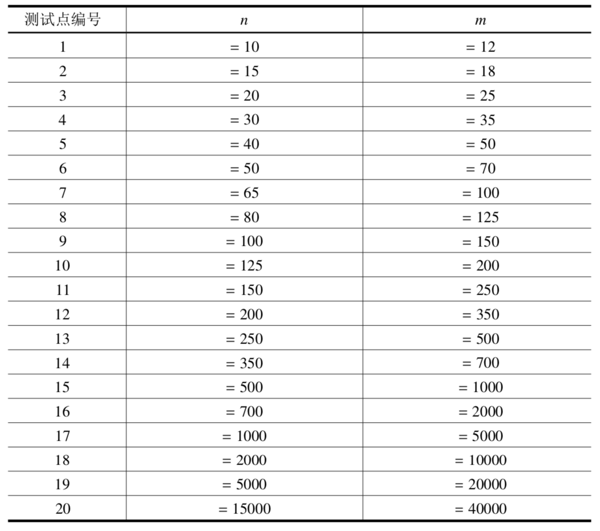

【样例 $1$ 说明】
共有 $5$ 个魔法阵，分别为：
物品 $1,3,7,6$，其魔法值分别为 $1,7,26,29$；
物品 $1,5,2,7$，其魔法值分别为 $1,5,24,26$；
物品 $1,5,7,4$，其魔法值分别为 $1,5,26,28$；
物品 $1,5,8,7$，其魔法值分别为 $1,5,24,26$；
物品 $5,3,4,6$，其魔法值分别为 $5,7,28,29$。
以物品 $5$ 为例，它作为 A 物品出现了 $1$ 次，作为 B 物品出现了 $3$ 次，没有作为 C 物品或者 D 物品出现，所以这一行输出的四个数依次为 $1,3,0,0$。
此外，如果我们将输出看作一个 $m$ 行 $4$ 列的矩阵，那么每一列上的 $m$ 个数之和都应等于魔法阵的总数。所以，如果你的输出不满足这个性质，那么这个输出一定不正确。你可以通过这个性质在一定程度上检查你的输出的正确性。
【数据规模】

 Comet OJ
Comet OJ